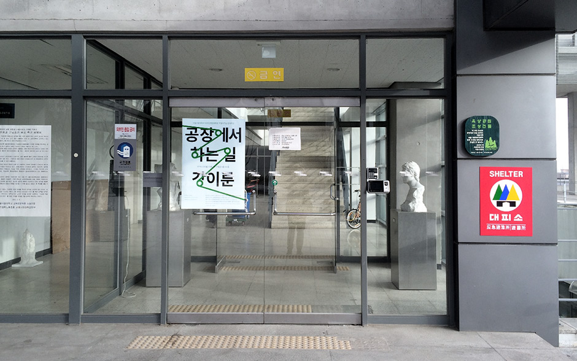
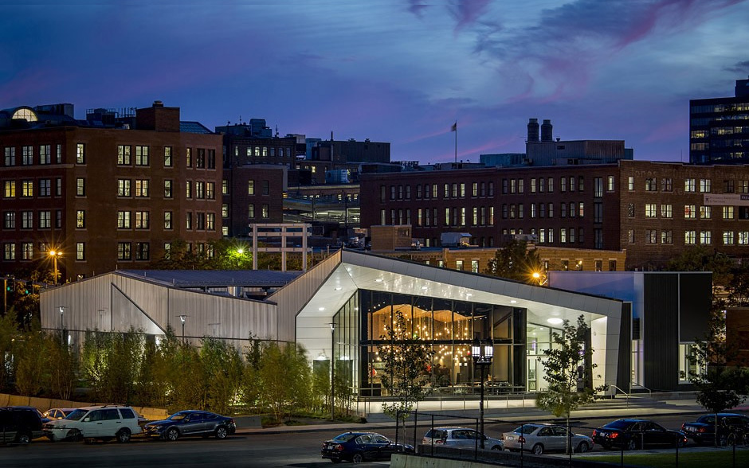
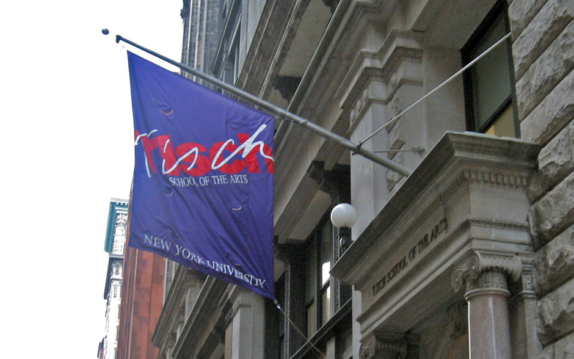
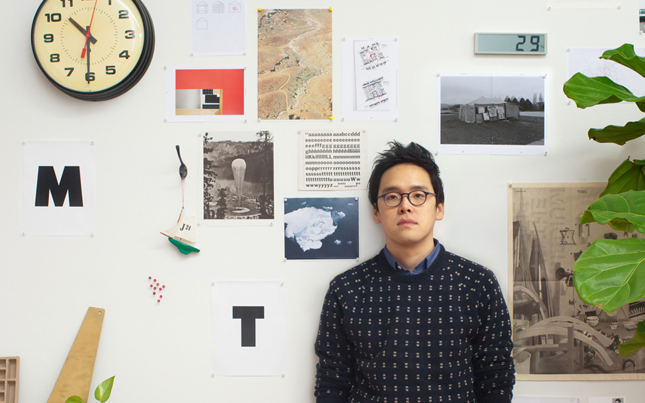
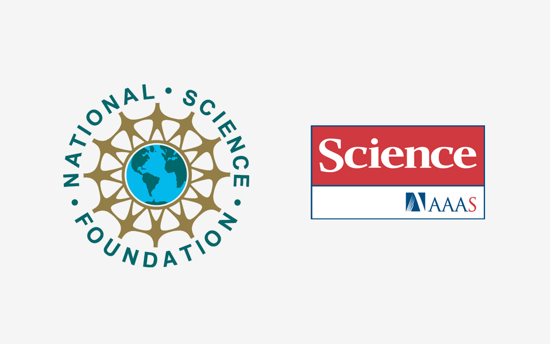
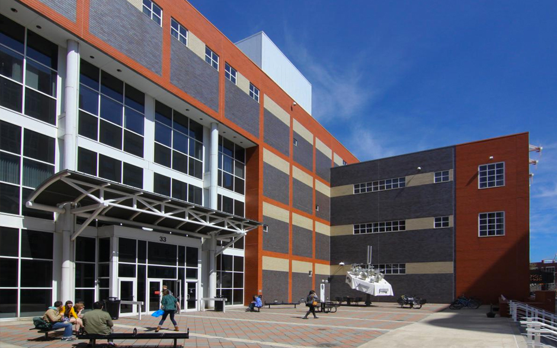
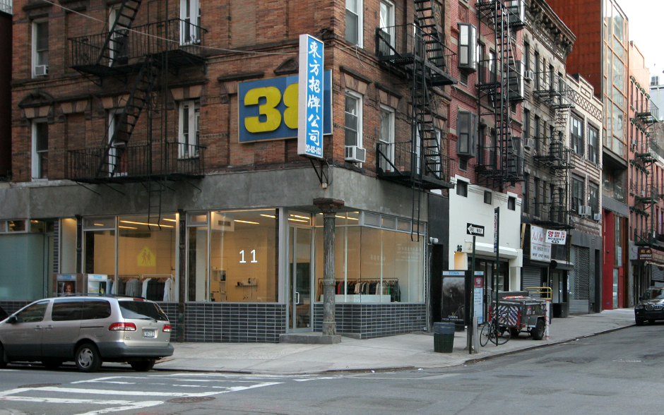

About / News
E Roon Kang lives and works in New York, where he operates Math Practice – an interdisciplinary design and research studio, with interest in studying, evaluating, and criticizing complex systems and its pursuit of efficiency.
E Roon is a TED Fellow, was previously a research fellow at SENSEable City Laboratory of MIT, and received Young Guns award from Art Director's Club. His work has selected as an inaugural project of LACMA's Art + Technology Lab, received NSF Science and Engineering Visualization Challenge, and shown in places including the Museum of Modern Arts (MoMA), Seattle Public Library, and the Architectural League of New York.
He gave talks and lectures at MIT, TED Conferences and Cannes Int'l Festival of Creativity, among others, and taught courses at Bauhaus-University Weimar, SUNY Purchase, NYU ITP, and Rutgers University. He holds an MFA in graphic design from Yale.
|
— Contacteroon.kang(at)gmail.com info(at)math-practice.org |
— |
— |
-
Talk at TED Fellows Retreat 2015
Aug 28, 2015
Another talk at TED Fellows Retreat 2015, on I—S—O—P—T and the Circle of Moment Measurement.
-
Circle of Moment Measurement at LACMA
Jul 18, 2015
A participatory performance/workshop held at Los Angeles County Museum of Art – as a part of the ongoing project I—S—O—P—T.
-
Talk at TEDx CarnegieLake
Apr 25, 2015
Talk about the project I—S—O—P—T, at TEDx CarnegieLake hosted at Princeton Public Library, Princeton, NJ
-

<공장에서 하는 일> Workshop at University of Seoul, South Korea
Feb 23, 2015
Week-long workshop and talk at University of Seoul, Graduate School of Design. From 2/23 to 2/27, 2015
-
Talk at Boston University, College of Fine Arts
Sep 29, 2014
Giving a talk at the graphic design department of Boston Univeristy.
-

Workshop: Timekeeper Invention Club at DxB
Sep 28, 2014
Design Exchange Boston (DxB) is hosting Timekeeper Invention Club, a part of I—S—O—P—T.
-
Revolution:Evolution at College of Creative Studies
Sep 11, 2014
Participated in the Revolution:Evolution Exhibition, curated by the graphic / interaction design faculty at the College for Creative Studies.
-
Workshop: Timekeeper Invention Club at LACMA
Aug 30, 2014
The Art + Technology Lab at LACMA is hosting a workshop lead by Taeyoon Choi and E Roon Kang, a part of I—S—O—P—T.
-
LACMA's Art+Technology Project
Apr 10, 2014
In Search of Personal Time, a colloborative project with Taeyoon Choi, is selected as one of five recepients of Los Angeles County Museum (LACMA)'s Art + Technology Lab grant.
-

New work, collaboration with Self-Assembly Lab of MIT
Mar 19, 2014
MIT Shape Change, a collaboration with Self-Assembly Lab for MIT Technology Review, will be given away at the TED2014: The Next Chapter
-
The 4th APAP Opening
Mar 13, 2014
APAP's long awaited exhibition is opening in Anyang on 3/28, with posters and banners we designed.
The exhibiton of the 4th APAP opens this 28th of March. Since early spring of 2013, the 4th APAP has undergone art productions with 26 artists and/or groups invited to Anyang. After nine years since APAP started building it upon Anyang Amusement Park, we invite you again to Anyang Art Park, Anyang.
-
Participating in Extrapolation Factory's Junk Mail Machine
Oct 17, 2013
Participating as a "future worker" in designing future junk mails, in The Extrapolation Factory's Junk Mail Machine project hosted at The Storefront for Art and Architecture, NYC.
-
APAP's new, real-time, participatory visual identity
Oct 17, 2013
New visual identity for Anyang Public Art Project, open to public.
The new visual identity of the 4th APAP proposes to expand the temporal and spatial experience of the project by encouraging the participation of the surrounding environment and the audience in the real-time broadcasting system that has been set up to enable the simultaneous perception of the “now” of Anyang from anywhere in the world.
-
Aesthetics of Automation, NYU ITP
Sep 1, 2013
New graduate level class, based on the A+–×=B workshop at Bauhaus-Universität Weimar is now being offered for Fall 2013 semester at New York University's Interactive Telecomunications Program (ITP).
-
New work to be projected on the facade of New Museum
May 4, 2013
New work and first collaboration with Ahrong Han, is going to be projected in public at the New Museum's facade. Change of State is commissioned by New Museum for 2013 IDEAS CITY Festival, organized by Nuit Blanche New York (NBNY). — Event Postponed
-
Guest Lecture at MIT Media Lab
Mar 14, 2013
Guest lecture at Fundamentals of Visual Communication class, offered in Spring 2013 at the MIT Media Lab.
-

Guest Lecture at Printing Code, NYU
Jan 23, 2013
Guest lecture at Rune Madsen's printing code class (Spring 2013) at NYU ITP.
-
Vier Kurse: A+–×=B
Jan 23, 2013
Student exhibition of the outcome from A+–×=B workshop will be presented at Ernst-Thälmann-Str. 19, Weimar, Germany. — Facebook
-
Bauhaus Masters: E Roon Kang
Jan 8, 2013
Artist talk at Bauhaus Masters series, R116, VdV, Bauhaus-Universität Weimar, Germany. — Facebook
-
A+–×=B, full-semester workshop at Bauhaus Weimar
Jan 8, 2013
Lead a full-semester workshop on design and automation, at Bauhaus-Universität Weimar, Germany.
-

Special Feature: 10 Noteworthy Designers of 2013
Jan 1, 2013
Selected as one of ten noteworthy designers, by Monthly Design Magazine, published in Korea. — Monthly Design
-
Design Sharing 2012, Bangkok, Thailand
Nov 17, 2012
Talk at Thailand Creative & Design Center (TCDC), as a part of Design Sharing 2012 conference, organized by Korean Institute of Design Promotion.
-
Talk at TED Salon in London
Nov 7, 2012
Talk at TED Salon 2012:Exploring Possibilities, hosted at the Unicorn Theater, London, UK. – A recap on Designmind
-

Guest Lecture at Printing Code, NYU
Jan 23, 2013
Guest lecture at Rune Madsen's printing code class (Fall 2012) at NYU ITP.
-
Lunch Talk @ Hyperakt
Jul 30, 2012
-
Next Generation Design Leader grant
May 10, 2012
Selected as one of eight recipients of Next Generation Design Leader grant, provided by Korean Institute of Design Promotion (KIDP) and Ministry of Knowledge and Economy of South Korea.
-
Talk at TED@Cannes
Jun 19, 2012
Talk at TED@Cannes, Cannes Lions: 59th International Festival of Creativity – Summary Video of TED@Cannes
-

Trash Track wins NSF Visualization Challenge
Mar 2, 2012
A project with SENSEable City Lab, Trash Track, wins 1st place in National Science Foundation (NSF)'s Visualization Challenge. – Science Magazine
-

Mason Gross Presents
Feb 28, 2012
Talk at Mason Gross School of the Arts, Rutgers University, New Brunswick, NJ.
-

Talk at TED 2012, Long Beach, CA
Feb 28, 2012
Talk at TED2012:Full Spectrum, Long Beach, CA.
-
2012 TED Fellows announced
Feb 27, 2012
Selected as a TED Fellow.
-

MoMA: Talk to Me
Jul 24, 2011
Backtalk, a project with the SENSEable City Lab, is included in Talk to Me at the Museum of Modern Art, New York, NY. 7/24–11/7, 2011
-
Guest lecture at Kookmin University, Seoul, Korea
Jun 1, 2011
Guest lecture at Visual Communication Design program at Kookmin University, Seoul, Korea
-
Between: twelve designers and studios
Oct 30, 2010
Tribute to Mandelbrot is exhibited, along with the works of twelve invited designers and design studios. #2 Calvin Street, London E1 6NW, UK, 10/30–11/4, 2010.
-
ADC Young Guns 8
Oct 7, 2010
Received ADC Young Guns 8 award from The Art Directors Club of New York, recognizing fifty creatives under 30. The Young Guns 8 exhibition will be open through October 22, 2010 at ADC Gallery, 106 West 29th Street, NYC.
-
Table Talk at The Book Society, Seoul, Korea
Aug 28, 2010
Talk at The Book Society, run by an independent publisher, Mediabus.
-
Lux et Veritas in Seoul, Korea
May 16, 2010
Yale MFA Thesis Show, Lux et Veritas, went to Seoul, Korea, at Space Hamilton. 2/28–3/27, 2010
-

Subcurrents in Project No.8/8b in New York
Feb 28, 2010
Subcurrents is shown at Project No.8 and No.8b in Lower East Side, New York City, as a part of Mannam exhibition series, curated by Hoon Kim and Andrew Sloat. From 2/28 to 3/27, 2010
-
Lux et Veritas in Berlin, Germany
Feb 13, 2010
Yale MFA Thesis Show, Lux et Veritas, went to Berlin, Germany, at Chert Gallery. 2/13–2/20, 2010
-
Study:Additive Circle show in Lower East Side, New York
Feb 1, 2017
Study: Additive Circle participated in the group exhibition, Bibimbop: Unexpected Transformations in New York, hosted at Allegra Laviola Gallery.
-
Lux et Veritas in Basel, Switzerland
Nov 27, 2009
Yale MFA Thesis Show, Lux et Veritas, went to Basel, Switzerland, at New Jerseyy gallery. 11/27–12/19
-
Trash Track in Seattle Public Library and Architectural League
Sep 19, 2009
Trash Track, a project with the SENSEable City Lab is open to public at two locations:
Seattle Public Library: 9/19–10/11
Architectural League of New York, Toward the Sentient City Exhibition, 9/17–11/7
-
Study: Additive White in Platform 2009 Seoul
Sep 3, 2009
Study: Additive White exhibited in "Void of Memory," Platform in KIMUSA of Platform 2009. 9/3–9/25